Exercise 1.2 - Train and Deploy a Deep Learning Model
Train Model: Now that our data set has been created, we are ready to start training our Deep Learning Model. In general, the more images used to train a model, the more accurate the model will be. The Augmented data set will create a better model than the 5 base images. We also have provided you with an even more accurate pretrained model built on 2000+ images.
-
Make sure you are on your
Cans-Augmented-YourInitialsdata set. -
Click
Train model.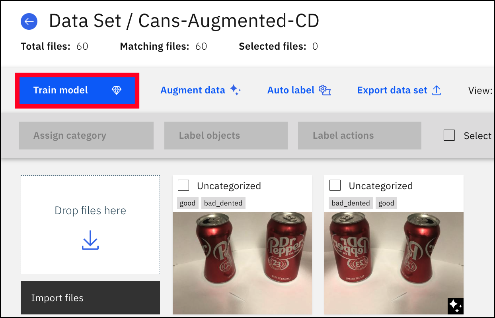
-
Give your model the name of
Dent Detection Model-YourInitials.
-
Select
Object Detectionas the type of training and switchAdvanced settingson in the top right corner.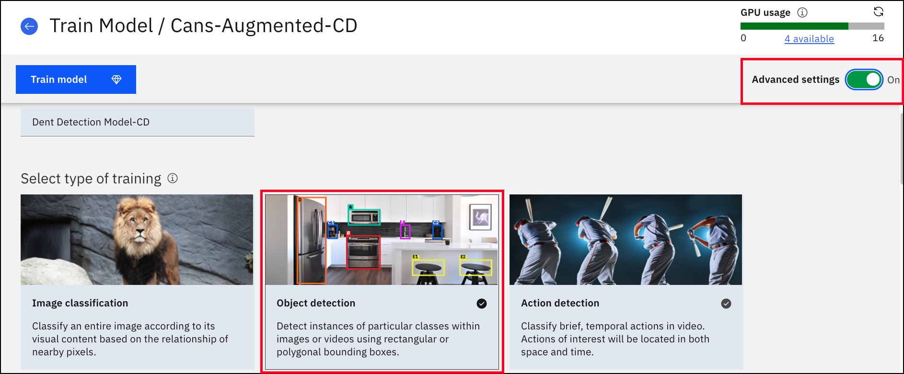
-
Scroll down to the
Optimize Modelusing section, selectTiny YOLO v2as the model type. -
Select
Enable Core MLas the training option, which is what allows the model to be used on an iOS device. -
In the
Model hyperparameters, changeMax Iterationto2000.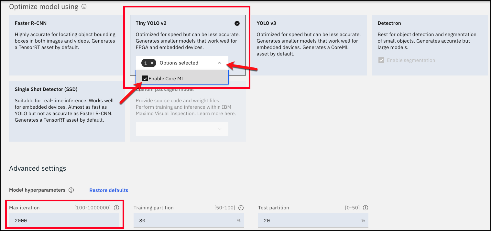
Attention
We are only using 2000 iterations because we don't want to stretch the GPU too thin. Also, it takes a lot more time to train the model with higher iterations. Increasing the iterations can improve model accuracy, similar to adding more images to a dataset.
-
Click the
Train Modelbutton at the top of the page.
-
The MVI Platform will schedule the model training and begin training when the resources become available. The timing of training varies on how many iterations you've chosen and how much data you’re using to train the model. As model training begins, you can move on to the next step and let it run in the background.
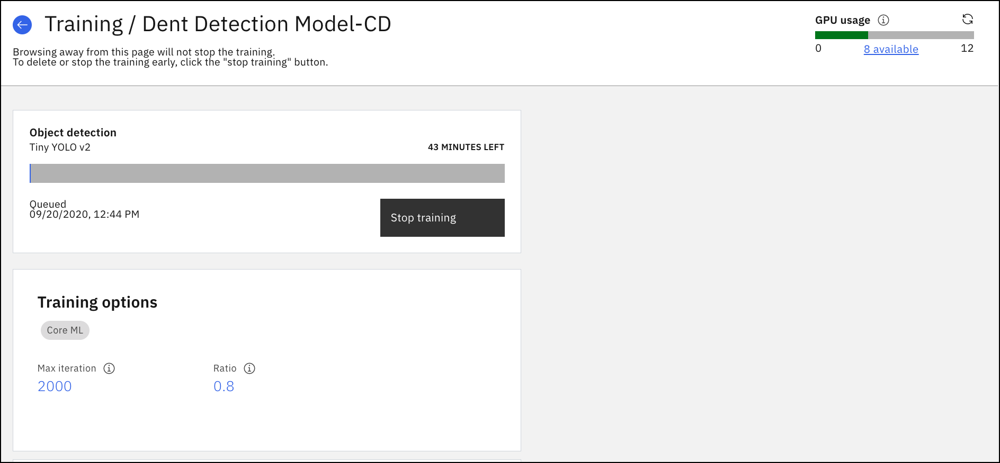
Deploy Model: While your model is training, we are going to deploy the model that was given to you as part of the lab artifacts. The model was trained using over 2,000 images. Therefore, it will be significantly more accurate than the model you just created.
-
First, select the
Modelstab.
-
Just like we did with the Data Set .zip file, we will do the same with the Model .zip file. You will drag and drop the
Dent Detection Model - Lab.zipfile that you saved to your computer or clickImport .zip fileand select the .zip file. Also, you can click thexon the progress bar for your model that is training if it is in the way.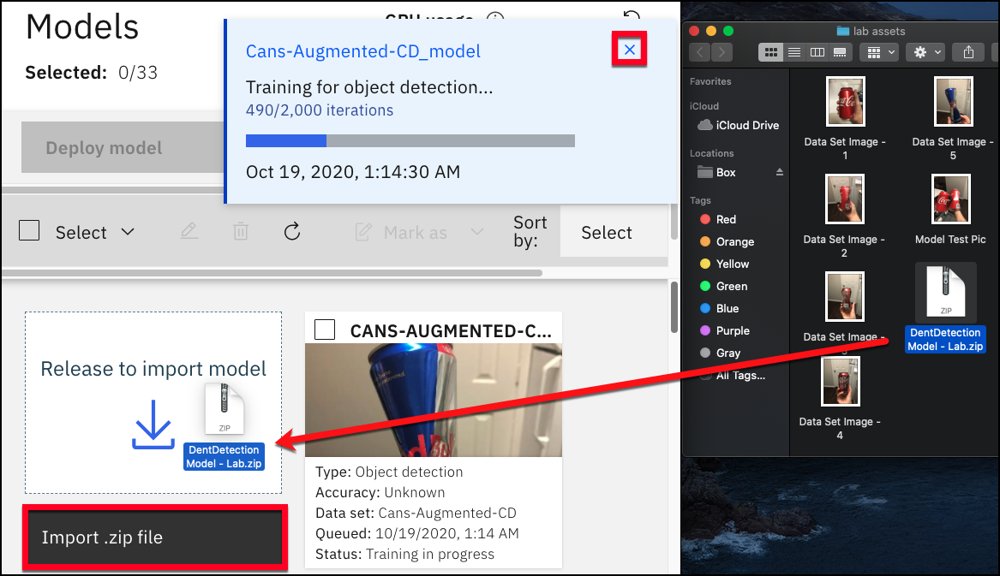
-
Give at least 4-5 minutes for the model to finished uploading.
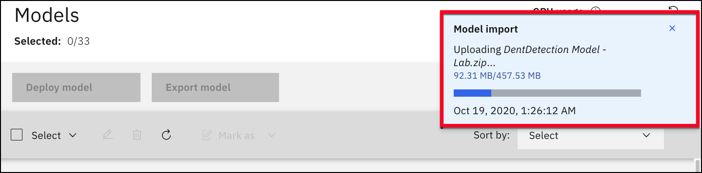
-
Once the model has finished uploading, click the checkbox and select the
Deploy Modelbutton.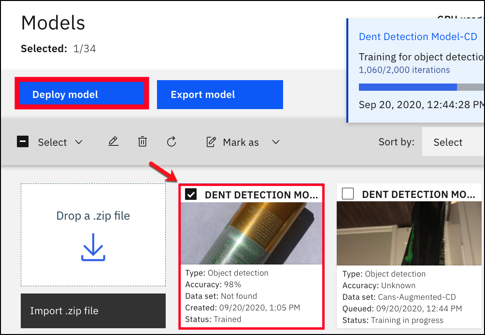
-
Select
Deploy.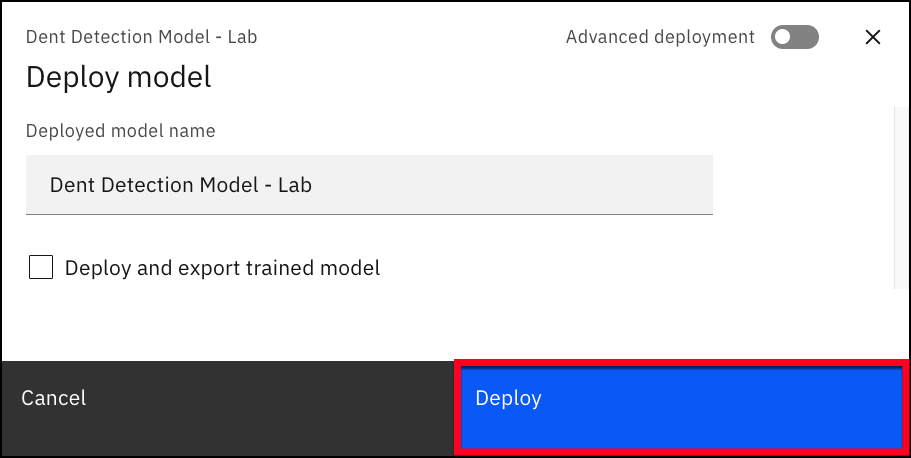
-
Wait a couple seconds for the model to be deployed. It should look like the picture below when it is ready.
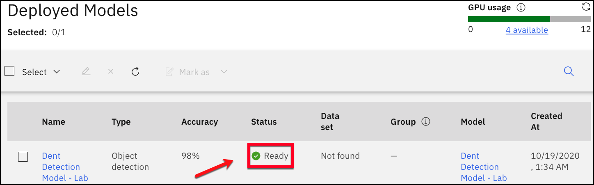
-
Click on the deployed model to see the details of the model.
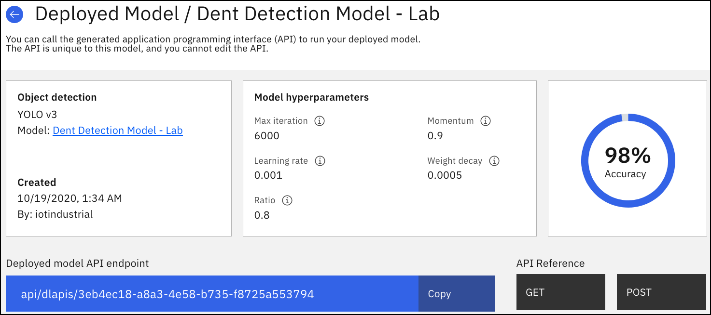
-
Scroll down to test the model. Drag the
Model Test Picwe provided you for testing and drop it into theTest Modelbox or selectImportand upload the picture. This image was not used to train the model.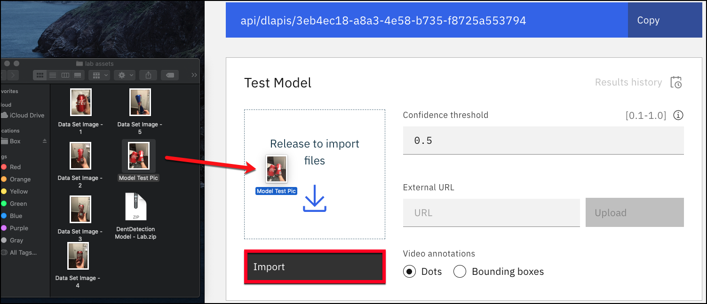
-
You can see our Deep Learning Model is able to identify which can is good and which can has a dent. On the right side is the color of each label and the confidence scores of how likely it is to be that object.
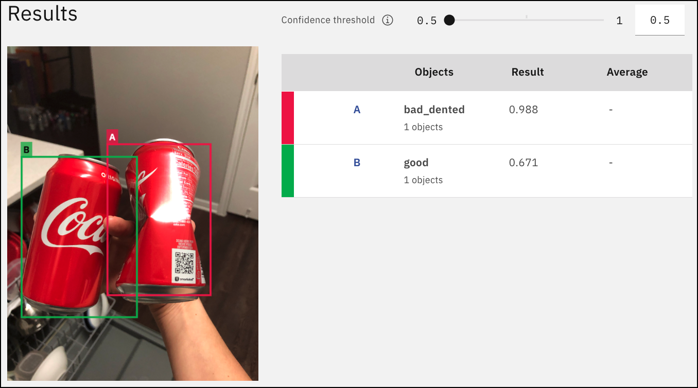
Congrats, you have trained and deployed a model that can be used on Maximo Visual Inspection Mobile!